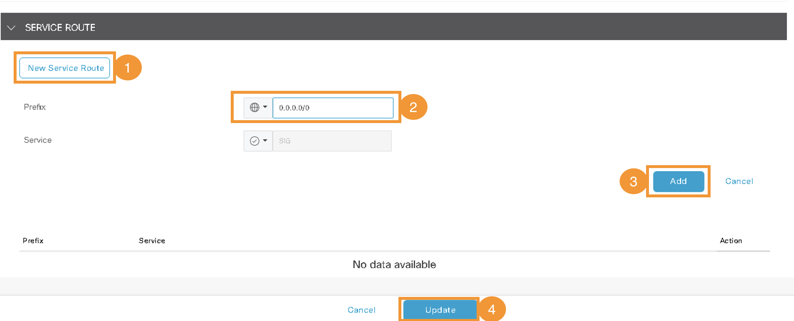

Task 7 - Umbrella SIG for Regional sites
In this task, Umbrella SIG will be integrated to Site 100 will be performed. This integration will be used to route traffic towards Umbrella and enforce Cloud Security policies for local Site 100 as well as for remote Site 400. Recall that as per IP traffic routing (earlier task) the Internet traffic from Site 400 is also routed via Site 100. Hence Umbrella policies from these sites will also be
Step 1 - IPSec Tunnels from Site-100 to Umbrella
Objective: Implement the SIG template in VPN-0 on the device template of node Site100-cE1 in the Transport and Management VPN section on vManage. This will result in creating IPSec tunnels between SD-WAN Site-100 and Umbrella Cloud.
1. Accessing Device Templates:
- Navigate to Configuration > Templates and click on Device Templates in vManage.

2. Editing Site100-cE1 Template:
- Locate the Site100-cE1 template from the
Descriptionfield. Then click on three dots (...) on the right hand side and clickEdit:
3. Configuring Transport and Management VPN:
- On the
Device Template, Click on Transport and Management VPN.
4. Adding Cisco Secure Internet Gateway Template:
- Add the
Cisco Secure Internet Gatewaytemplate by clicking on it, and then selectVIP23-SIG-Feature-Templatefrom the dropdown for this template.
5. Ensuring Cisco SIG Credentials:
- Scroll down to the Additional Templates section and confirm the addition of Cisco SIG Credentials with value of
VIP23-SIG-Credentials.
6. Updating and Configuring Devices:
-
Click on Update to modify the settings.
-
Click Next to proceed with the configuration

-
Click
Configure Deviceson next page
-
Wait for
successmessage for pushing these configuration changes to Site100-cE1.
Step 2 - Verify SIG Tunnels on Umbrella
Objective: Confirm the operational status of IPSec tunnels to Site100-cE1 by accessing the Umbrella dashboard.
1. Accessing Umbrella Dashboard:
- Log in to the Umbrella Dashboard via
Umbrella SSOon the RDP session.
2. Checking Tunnel Status:
-
Navigate to Deployments > Core Identities > Network Tunnels.
-
Initially, the newly created IPSec tunnels may appear under Unestablished Tunnels.

-
After a few minutes, they should appear as Active Tunnels.

Step 3 - Redirect Traffic to SIG Tunnels
Objective: Direct VPN-10 traffic from SD-WAN Site-100 via IPSec tunnels towards Umbrella by adding a Service route on vManage.
1. Modifying VPN Template:
- On the vManage GUI, go to Configuration > Templates > Feature Templates.
- Search for
VPN_10_05-09-2022_17-18-00_vedge-C8000V_1201andEditthe template.
2. Adding Service Route:
-
Select Service Route.
-
Click New Service Route and add a Prefix of
0.0.0.0/0pointing toSIG(default). -
Click Add and then click Update at the bottom of the page 
3. Updating and Configuring Device:
-
Click Next and then click Configure Devices
-
Wait till config push is sucessfull to Site100-cE1.
-
Optional: you may SSH to Site100-cE1 by using MTPutty application on RDP session (Jumphost). Validate that the service route command
ip sdwan route vrf 10 0.0.0.0/0 service sigare pushed by vManage.
4. Verifying Traffic Redirection to Umbrella:
-
Using mRemoteNG, relaunch the console session of the Ubuntu VM
Site400-Ubuntu-VPN10. -
Open the Chromium Web Browser on this VM and navigate to
welcome.umbrella.com. The messageWelcome to Umbrellaindicates successful protection by Umbrella.
Conclusion: With these configurations, traffic from Site-100 and Site-400 is now routed towards Umbrella using the IPSec tunnels. The next steps will involve configuring Cloud Security policies for these sites on Umbrella.